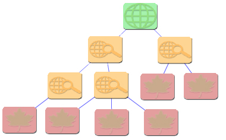
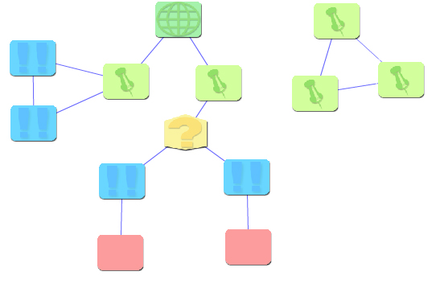
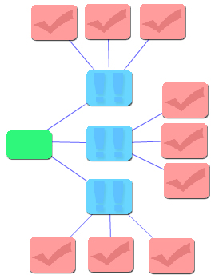
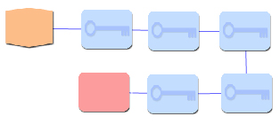
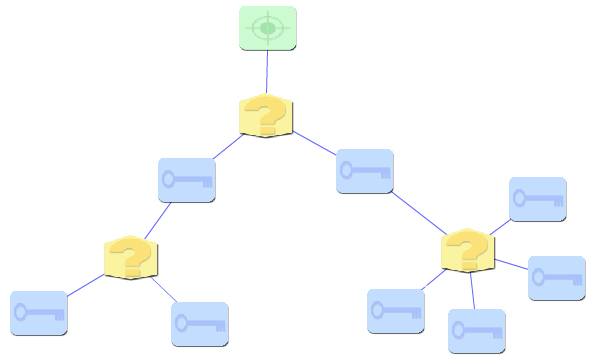

Types of EGOs
There are seven types of organizers, each with a specific purpose and set of constraints. Information on each is listed here.Tree Map
- Nodes: Root, Child, Leaf
- Description: Tree maps are used for creating EGOs that are in the form of a tree. That is, there is one root node, child nodes connect to the root node (or other child nodes), and leaf nodes are at the end of each chain.
- Constraints: Must have one root node. The maximum depth of the tree must be less than 6. Cannot contain any loops.
- Example:

Generic Topic Map
- Nodes: Root, Topic, Reason, Decision, Outcome
- Description: Generic topic maps are the most unconstrained of all EGOs. They can be linked together in any manner, may include loops or disconnected portions, and have no limits on how nodes are connected together. They are intended for organizing thoughts in whatever manner makes the most sense to you.
- Constraints: Must have one root node.
- Example:

Persuasion Map
- Nodes: Title, Reason, Fact
- Description: Persuasion maps are used for developing persuasive arguments. The title node represents the argument to be made, reason nodes connect to the title node and indicate your reasons for making that argument, and fact nodes connect to reason nodes. Facts should support the reason to which they are attached, and represent the concrete evidence behind your argument.
- Constraints: Must have one title node. Cannot contain any loops. The root should have multiple reasons; each reason should be supported by multiple facts.
- Example:

Brainstorm Map
- Nodes: Goal, Idea
- Description: Brainstorm maps are used to collect one's thoughts on a topic. The goal node represents the topic of thought or the problem to be solved. Attached to the goal node are any number of idea nodes, which represent your thoughts on the problem.
- Constraints: Must have one goal node. Cannot contain any loops.
- Example:

Story Map
- Nodes: Problem, Event, Outcome
- Description: Story maps represent plot lines in a story, where each plot line consists of a problem that is encountered in the story. Events that occur as a result of the problem are chained together and attached to the problem; at the end of the chain is the final outcome of the plot line.
- Constraints: Must have one problem node. Cannot contain any loops. Must be linear (contain no branches). Should end with a single outcome node.
- Example:

Decision Map
- Nodes: Start, Decision, Event
- Description: Decision maps are used to model a set of choices. Each decision map begins with a start node, which is attached to a set of decision and event nodes. Each decision node will have multiple child nodes (event nodes) attached to it, which represent the consequences of making a decision one way or another.
- Constraints: Must have one start node. The maximum depth of the map must be less than 6. Cannot contain any loops.
- Example:

Flow Chart
- Nodes: Start, Event
- Description: Flow charts represent a linear series of events. That is, each graph begins with a start node, followed by an unbranching chain of even nodes.
- Constraints: Must have one root node. Cannot contain any loops. Must be linear (contain no branches).
- Example: